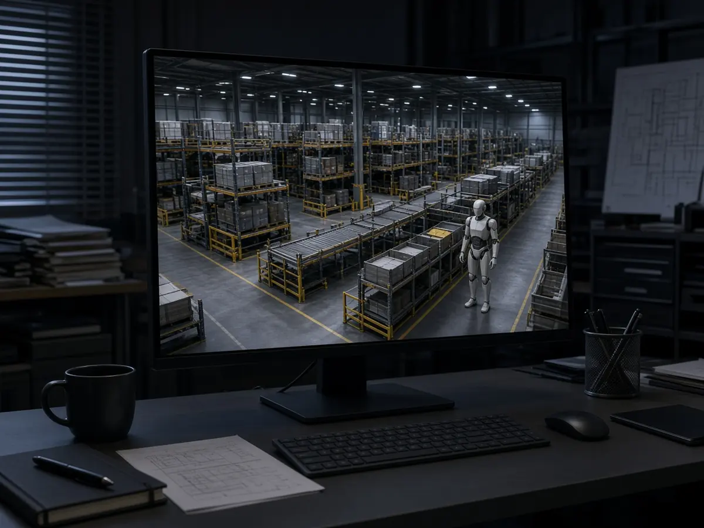

Deployments
Audi tests Agile Robots' mobile humanoids for parts sequencing, with Ingolstadt in view
Short answer: Audi and Munich-based Agile Robots, supported by Dassault Systèmes and NVIDIA, are testing whether mobile humanoids can take on parts sequencing, the job of picking parts from containers and laying them out in the order final assembly needs them, according to a joint Audi media release. The proof of concept runs in the Audi Production Lab and is aimed at the Ingolstadt plant, as Automotive Logistics reported on 28 October.
The project was first announced at NVIDIA GTC Berlin on 21 October, according to Audi and Agile Robots, and has drawn fresh coverage this week. Audi says sequencing at its sites involves around one million picks a day, which makes it one of the more demanding automation tasks in its logistics.

According to the release, the partners use a virtual twin built with Dassault Systèmes' DELMIA on the 3DEXPERIENCE platform, together with NVIDIA Omniverse libraries, to test feasibility, cycle timing, ergonomics and safety before robots work on the real line. The release adds that LEO, Dassault Systèmes' AI-powered virtual companion, is set to assist engineers in future.
Interesting Engineering reported on 29 October that the robots are Agile ONE humanoids and that no performance results or rollout timeline have been given. Agile Robots says it was founded in 2018, has more than 20,000 solutions deployed and employs over 3,500 people.
Agile Robots unveiled its Agile ONE SN reference humanoid at the same event, as covered in our report on NVIDIA's Isaac update. Other carmakers are running similar trials, including FAW-Volkswagen with UBTech and Toyota and Honda in Japan; more are on our deployments hub.
Sources
- Agile Robots and Audi to transform automotive logistics with mobile humanoids, supported by Dassault Systèmes and NVIDIA (Audi media release, 21 Oct 2026)
- Agile Robots and Audi to transform automotive logistics (Agile Robots news, 21 Oct 2026)
- Audi unveils humanoid proof of concept to automate parts sequencing in Ingolstadt (Automotive Logistics, 28 Oct 2026)
- Audi tests humanoids in car factory (Interesting Engineering, 29 Oct 2026)